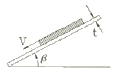
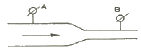
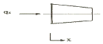
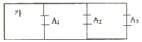
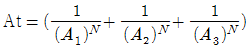
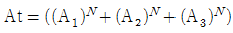
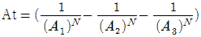
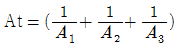

소방설비산업기사(기계) (2005-09-04 기출문제)
1과목: 소방원론
1. 불꽃 연소의 특성이 아닌 것은?
- 작열연소보다 산화반응 속도가 크다.
- 연쇄반응이 일어난다.
- 작열연소보다 발열이 크다.
- 가연물 내부에서도 격렬한 연소가 진행된다.
(정답률: 14%)

2. 다음 중 셀롤로이드 또는 폴리우레탄 등이 연소할 때 발생하는 연소생성물로 옳은 것은?
- 시안화수소
- 아크릴로레인
- 질소산화물
- 암모니아
(정답률: 22%)
3. 다음의 소화원리중 냉각효과에 의한 화학소화 메카니즘은?
- 산림화재시 연소확대를 저지하기 위하여 맞불을 놓았다.
- 튀김기름이 타고 있을 때 신선한 야채를 넣었다.
- 알콜이 실험대 표면에서 타고 있을 대 실험복을 덮어 소화했다.
- 가연물의 활성성분을 산소와 반응하지 못하도록 염소브롬등의 할로겐계 원소를 접촉시켰다.
(정답률: 90%)
4. 화재의 등급에서 E 급에 해당하는 표시색은? (단, 가스화재이다.)
- 백색
- 황색
- 청색
- 무색
(정답률: 56%)
5. 상태의 변화없이 물질의 온도를 변화시키기 위해서 가해진 열을 무엇이라 하는가?
- 현열
- 잠열
- 비열
- 융해열
(정답률: 79%)
6. 제1류 위험물로서 그 성질이 산화성고체인 것은?
- 셀룰로이드류
- 금속분류
- 아염소산염류
- 과염소산
(정답률: 74%)
7. 목재로 된 건축물이 화재가 발생하여 진화될 때까지의 과정을 설명한 것중 알맞은 것은?
- 무염착화 → 발염착화 → 최성기 → 연소낙하 → 진화
- 발화 → 무염착화 → 연소낙하 → 진화
- 발화 → 발염착화 → 무염착화 → 연소낙하 → 진화
- 발염착화 → 무염착화 → 발화 → 진화
(정답률: 91%)
8. 건축물의 피난 동선 및 피난에 대한 설명으로 옳지 않은 것은?
- 피난동선은 가급적 단순, 명료한 형태가 좋다.
- 막다른 복도는 가능한 짧게하는 것이 유리하다.
- 피난동선이라 함은 복도, 계단, 엘리베이터 등 피난을 위한 이동수단을 말한다.
- 피난계단은 돌음계단으로 하여서는 아니된다.
(정답률: 74%)
9. 가연물이 연소할 때 연쇄반응을 차단하기 위하여는 공기중의 산소량을 일반적으로 몇 % 이하로 억제해야 하는가?
- 15
- 17
- 19
- 21
(정답률: 77%)
10. 화학열이라고 할 수 없는 것은?
- 연소열
- 분해열
- 압축열
- 용해열
(정답률: 59%)
11. 실내화재에 있어서 후레쉬 오버 시점에서의 실내온도는 일반적으로 약 몇 ℃ 정도인가?
- 500 ~ 600
- 800 ~ 1000
- 1500 ~ 1600
- 2000 ~ 2100
(정답률: 83%)
12. 화재의 증가 추세의 주요 원인이 아닌 것은?
- 플라스틱 등 가연성 물질의 대량 생산
- 새롭고 위험한 생산방법의 도입
- 방화구축된 건물의 증가
- 사회불안에 따른 방화의 증가
(정답률: 87%)
13. 할로겐화합물 소화약제의 특성이 아닌 것은?
- 비점이 비교적 낮다.
- 기화되기 쉽다.
- 인화점이 높아야 한다.
- 공기보다 무거워야 한다.
(정답률: 53%)
14. 화재시 발생하는 후레쉬 오버현상에 대한 설명으로 틀린 것은?
- 후레쉬 오버현상은 화재공간에 있는 가연물의 위치에 따라 나타나는 양상의 차이가 있다.
- 후레쉬 오버현상은 화재공간의 개구율과 관계가 있다.
- 후레쉬 오버현상은 화재공간에 있는 가연물의 양과 관계가 있다.
- 후레쉬 오버현상은 화재공간의 습도가 결정적인 영향을 미친다.
(정답률: 40%)
15. LP가스의 공기에 대한 비중은 약 몇배인가?
- 1.0 ~ 1.5배
- 1.5 ~ 2.0배
- 2.0 ~ 2.5배
- 2.5 ~ 3.0배
(정답률: 90%)
16. 다음 중 설치기준 및 목적이 고가차량(고가사다리차 또는 굴절차)과 직접적으로 관련이 있는 것은?
- 옥내소화전설비
- 자동화재탐지설비
- 비상용승강기
- 가스계소화설비
(정답률: 47%)
17. 내화건축물의 화재 발생시 나타나는 화재 특성은?
- 저온단기형
- 저온장기형
- 고온단기형
- 고온장기형
(정답률: 67%)
18. 폭발을 일으킬수 없는 물질은?
- 가연성가스
- 액체위험물
- 밀가루
- 시멘트가루
(정답률: 77%)
19. 목조 건축물의 화재 원인과 직접적인 관련이 없는 것은?
- 접염
- 복사열
- 비화
- 대류열
(정답률: 16%)
20. 건축물의 피난계획에 대한 설명으로 옳지 않은 것은?
- 피난경로의 내장재 불연화
- 초고층 건축물의 경우 체류공간 확보
- 2방향 피난 경로의 확보
- 비상용 엘리베이터 근접설치 및 적극적 활용
(정답률: 78%)
2과목: 소방유체역학
21. 이산화탄소 소화약제의 소화효과는?
- 냉각, 질식
- 냉각, 부촉매
- 질식, 연쇄반응 억제
- 질식, 희석
(정답률: 90%)
22. 그림과 같이 수평면과 β=30°의 각도로 기울어진 아주 큰 평판 위에 균일한 두께 t=1㎜ 의 얇은 기름 막이 있다. 기름 막 위에 놓여진 20㎝× 20㎝의 정사각형 평판은 평판의 무게 800N에 의해 일정한 속도 V=5㎧ 로 미끄러져 내려오고 있다. 이때 기름의 점성계수는 몇 Nㆍs/m2 인가? (단, 기름은 뉴톤유체이고, 기름막에서의 유동은 속도분포가 선형인 Couette 유동이라고 가정한다.)

- 1.73
- 2
- 3.46
- 4
(정답률: 28%)
23. 유체를 정의한 것 중 가장 옳은 것은?
- 용기안에 충만될때까지 항상 팽창하는 물질
- 흐르는 모든 물질
- 흐르는 물질 중 전단응력이 생기지 않는 물질
- 전단응력이 물질내부에 생기면 정지상태로 있을 수 없는 물질
(정답률: 35%)
24. 헬륨, 네온, 아르곤 또는 질소가스 중 하나 이상의 원소를 기본성분으로 하는 소화 약제는?
- 하론1301 소화약제
- HCFC-124 소화약제
- 불활성가스 청정소화약제
- HFC-227ea 소화약제
(정답률: 36%)
25. 할로겐화합물 소화약제의 저장 및 취급 방법으로 옳지 않은 것은?
- 하론1301은 독성이 매우 강하므로 취급시 특히 주의가 필요하다.
- 온도가 40℃이하이고 온도변화가 적은 곳에 저장해야 한다.
- 방화문으로 구획된 실에 저장해야 한다.
- 저장용기와 집합관을 연결하는 연결배관에는 체크밸브를 설치해야 한다.
(정답률: 13%)
26. 그림과 같은 형태의 수평배관에 물이 흐르고 있다. 압력계 A에서의 지시압은 500kPa, 이 지점에서의 물의 동압은 5kPa일때 압력계 B에서의 지시압은 약 몇 kPa 인가? (단, B 지점에서의 동압은 12kPa, A,B간의 마찰손실 압력은 8kPa이라 한다.)

- 492
- 485
- 475
- 462
(정답률: 48%)
27. 그림과 같이 대칭인 물체를 통하여 1차원 열전도가 생긴다, 열발생률은 없고, A(x) = 1-x, T(x) =300(1-2x-x3), Q - 300 W인 조건에서 열전도율을 구하면? (단, A, Ｔ, x 의 단위는 각각 m2, K, m 이다.)

 (W/m·K)
(W/m·K) (W/m·K)
(W/m·K) (W/m·K)
(W/m·K) (W/m·K)
(W/m·K)
(정답률: 67%)
28. 유체수송과 관련한 설명 중 맞지 않는 것은?
- 수력구배선은 에너지선보다 항상 아래에 있다.
- 베르누이방정식은 비압축성 유동에만 사용할 수 있다.
- 유체에 점성이 없다면 속도분포가 포물선형으로 된다.
- 압력수두, 속도수두, 위치수두를 모두 합한 것을 전수두라 한다.
(정답률: 35%)
29. 관내를 흐르고 있는 유체에 대해 체적 유량으로 표시하기 곤란한 경우는?
- 물이 관내를 흐를 때
- 기름이 관내를 흐를 때
- 탄산가스가 관내를 흐를 때
- 단면적이 변하는 관 속을 물이 흐를 때
(정답률: 44%)
30. 높이 40m의 저수조에서 15m의 저수조로 직경 45㎝, 길이 600m의 주철관을 통해 물이 흐르고 있다. 유량은 0.25m3/s 이며, 관로 중의 터빈에서 29.4 kW의 동력을 얻는다면 관로의 손실수두는 몇 m 인가? (단, 터빈의 효율은 100%이다.)
- 12
- 13
- 14
- 15
(정답률: 25%)
31. 내경 D인 배관에 비압축성 유체인 물이 V(㎧)의 속도로 흐르다가 갑자기 내경이 3배가 되는 확대관으로 흐르고 있다. 확대된 배관에서의 물의 속도는 처음속도의 몇 배가 되겠는가?
- 1배
- 1/3배
- 1/6배
- 1/9배
(정답률: 83%)
32. 압력 0.1㎫, 온도 60℃ 상태의 R-134a의 내부 에너지(kJ/㎏)를 구하면? (단, 이때 h=454.99 kJ/㎏, v=0.26791m3/㎏ 이다.)
- 428.20 kJ/㎏
- 454.27 kJ/㎏
- 454.96 kJ/㎏
- 26336 kJ/㎏
(정답률: 50%)
33. 다음 설명 중 틀린 것은?
- 유동하는 유체의 교란되지 않은 정압은 피에조메타를 이용하여 측정한다.
- 포소화설비에 사용되는 라인프로포셔너는 벤츄리효과를 이용한 것이다.
- 토리첼리의 정리를 이용하여 이론적으로 구한 유량은 실제유량보다 작다.
- 타원형 단면의 금속관이 팽창하는 원리를 이용하는 압력측정장치는 부르돈 압력계이다.
(정답률: 56%)
34. 할로겐족 원소에 관한 설명 중 옳지 않은 것은?
- F, Cl, Br, I 등이 할로겐족 원소들이다.
- 상온에서는 F2, Cl2, Br2, I2 등의 2원자 분자로 서 존재한다.
- F2는 연한 노랑색이고 Cl2는 녹색을 띤 노랑색이다.
- 할로겐 원소는 최외각 전자수가 7개이기 때문에 화합물 형성시 산화수는 항상 +7이다.
(정답률: 30%)
35. 안지름이 5㎝이고 길이가 100m인 직선 원형관이있다. 이 관을 이용하여 4000cm3/s의 물을 수송할 때 관에서 생기는 마찰 손실수두는 몇 m인가? (단, 관의 마찰 계수는 0.03이다.)
- 12.7
- 127
- 20.3
- 203
(정답률: 38%)
36. 액체와 고체가 접촉하면 상호부착 하려는 성질을 갖는데 이 부착력과 액체 응집력의 상대적 크기에 의해 일어나는 현상은 무엇인가?
- 압축성 유동
- 모세관 현상
- 점성
- 뉴톤의 마찰법칙
(정답률: 35%)
37. 기름으로 가득찬 용기에서 수면에서 연직 하 방향으로 3m지점의 게이지 압력은? (단, 기름의 비중은 0.81 이다.)
- 23.8 kPa
- 29.4 kPa
- 36.3 kPa
- 42.8 kPa
(정답률: 36%)
38. 펌프란 필요한 양의 액체를 요구하는 높이까지 송출 시키는 기계이다. “요구하는 높이”라는 말에서 펌프로 부터의 수직거리만을 나타내는 용어는?
- 전양정
- 실양정
- 토출양정
- 흡입양정
(정답률: 18%)
39. 온도가 20℃, 압력이 294kPa인 공기의 비중량은 몇 N/m3인가? (단, 공기의 기체상수는 287 Nㆍm/kgㆍK이다.)
- 32.3
- 33.3
- 34.3
- 35.3
(정답률: 22%)
40. 안지름 100mm인 파이프를 통해 5㎧의 속도로 흐르는 물의 유량은 몇 m3/min 인가?
- 23.55
- 2.36
- 0.52
- 5.17
(정답률: 48%)
3과목: 소방관계법규
41. 다음 중 소방대상물의 개수명령에 따른 손실보상은 누가 실시하게 되는가?
- 소방방재청장
- 시 ㆍ 도지사
- 소방본부장 또는 소방서장
- 시장 ㆍ 군수
(정답률: 77%)
42. 소방본부장 또는 소방서장은 소방검사를 하고자 하는 때에는 몇 시간 전에 관계인에게 알려야 하는가?
- 6시간
- 12시간
- 18시간
- 24시간
(정답률: 80%)
43. 방염대상품에 대한 방염성능기준으로 적합한 것은?
- 불꽃에 의하여 완전히 녹을 때까지 불꽃의 접촉횟수는 3회 이상
- 버너의 불꽃을 제거한 때부터 불꽃을 올리며 연소하는 상태가 그칠 때까지 시간은 30초 이내
- 버너의 불꽃을 제거한 때부터 불꽃을 올리지 아니하고 연소하는 상태가 그칠때까지 시간은 20초이내
- 탄화한 면적은 20제곱센티미터 이내, 탄화한 길이는 50센티미터 이내
(정답률: 69%)
44. 스프링클러설비를 설치하여야 하는 특정소방대상물로서 틀린 것은?
- 복합건축물 또는 교육연구시설 내에 있는 학생수용을 위한 기숙사로서 연면적 5,000m2 이상인 경우에는 전층
- 층수가 11층 이상인 특정소방대상물의 경우에는 전층
- 정신보건시설 및 숙박시설이 있는 수련시설로서 연면적 500m2 이상인 경우에는 전층
- 지하가로서 연면적 1,000m2 이상인 것
(정답률: 72%)
45. 다음 중 자동화재탐지설비를 설치하여야 하는 특정소방대상물이 아닌 것은?
- 복합건축물로서 연면적 600m2 이상인 것
- 지하구
- 길이 500m 이상의 터널
- 연면적 400m2 이상인 노유자시설로서 수용인원이 100인 이상인 것
(정답률: 43%)
46. 연면적 3만m2이상 10만m2 미만인 특정소방대상물 또는 지하층을 포함한 층수가 16층이상 30층 미만인 경우 공사현장에 배치되어야 하는 소방공사 감리원은?
- 특급소방감리원 1인 이상
- 고급소방감리원 1인 이상
- 중급이상 소방감리원 1인 이상
- 초급이상 소방감리원 1인 이상
(정답률: 10%)
47. 소방본부장 또는 소방서장의 건축허가동의를 받아야 하는 범위로서 거리가 가장 먼 것은?
- 노유자시설의 경우 연면적이 200제곱미터 이상인 건축물
- 무창층이 있는 건축물로서 바닥면적이 150제곱미터 이상인 측이 있는 것
- 특정소방대상물 중 위험물제조소등, 가스시설 및 지하구
- 차고 ㆍ 주차장으로 사용되는 층 중 바닥면적이 100제곱미터 이상인 층이 있는 시설
(정답률: 69%)
48. 특수가연물에 해당하는 것은?
- 면화류 : 200㎏ 이상
- 대팻밥 : 300㎏ 이상
- 넝마 : 400㎏ 이상
- 가연성고체류 : 500㎏ 이상
(정답률: 56%)
49. 화재경계지구의 지정권자는?
- 소방본부장
- 시 ㆍ 도지사
- 소방서장
- 행정자치부장관
(정답률: 79%)
50. 위험물의 임시저장 취급에 대한 설명으로 틀린 것은?
- 임시저장 ㆍ 취급의 기준은 시 ㆍ 도의 조례로 정한다.
- 임시저장 ㆍ 취급 기간은 60일 이내이다.
- 지정수량 이상의 위험물을 임시저장 ㆍ 취급할 경우 관할 소방서장의 승인을 받아야 한다.
- 군부대가 지정수량 이상의 위험물을 군사목적으로 임시저장 ㆍ 취급할 경우도 임시저장할 수 있다.
(정답률: 69%)
51. 다음 중 특정소방대상물의 구분 중 그 짝이 잘못된 것은?
- 근린생활시설 - 일반목욕탕
- 업무시설 - 소방서
- 의료시설 - 의원
- 위락시설 - 무도학원
(정답률: 14%)
52. 한국소방안전협회의 업무가 아닌 것은?
- 소방기술과 안전관리에 관한 교육 및 조사 ㆍ 연구
- 소방기술과 안전관리에 관한 각종 간행물의 발간
- 소방용 기계 ㆍ 기구에 대한 검사기술의 조사 ㆍ 연구
- 화재예방과 안전관리 의식의 고취를 위한 대국민 홍보
(정답률: 36%)
53. 전문소방시설공사업에서 주된 기술인력으로 소방설비기사자격자는 기계분야와 전기분야로 구분하여 선임하는데 각 몇 명 이상이어야 하는가?
- 기계분야 : 1명이상, 전기분야 : 1명이상
- 기계분야 : 2명이상, 전기분야 : 2명이상
- 기계분야 : 2명이상, 전기분야 : 1명이상
- 기계분야 : 1명이상, 전기분야 : 2명이상
(정답률: 57%)
54. 다음중 화재의 원인 및 피해를 조사할 수 있는 조사권을 가진 자로 맞는 것은?
- 시 ㆍ 도지사 또는 소방본부장
- 소방본부장 또는 소방서장
- 소방본부장 또는 소방파출소장
- 소방서장 또는 소방파출소장
(정답률: 63%)
55. 다음은 손실보상과 관련된 내용이다. 틀린 것 하나를 고른다면?
- 손실보상에 관하여는 시 ㆍ 도지사와 손실을 입은 자가 협의 하여야 한다.
- 보상금액에 관한 협의가 성립되지 아니한 경우에는 그 보상금액을 지급하거나 공탁하고 이를 통지하여야 한다.
- 손실을 보상하는 경우에는 공시지가로 보상하여야 한다.
- 보상금의 지급 또는 공탁의 통지에 불복이 있는 자는 지급 또는 공탁의 통지를 받은 날부터 30일 이내에 관할토지수용위원회에 재결을 신청할 수 있다.
(정답률: 64%)
56. 다음 중 소방대상물에 해당하지 않는 것은?
- 산림
- 차량
- 선박건조구조물
- 철도
(정답률: 25%)
57. 위험물은 1소요단위가 지정수량의 몇 배인가?
- 5배
- 10배
- 20배
- 30배
(정답률: 69%)
58. 주유취급소의 고정주유설비의 주위에는 주유를 받으려는 자동차 등이 출입할 수 있도록 너비 몇[m]이상, 길이 몇[m]이상의 콘크리트 등으로 포장한 공지를 보유하여야 하는가?
- 너비 20m 이상, 길이 5m 이상
- 너비 10m 이상, 길이 8m 이상
- 너비 15m 이상, 길이 6m 이상
- 너비 10m 이상, 길이 6m 이상
(정답률: 15%)
59. 무창층의 요건으로서 거리가 먼 것은?
- 개구부의 크기가 지름 50센티미터 이상의 원이 내접할 수 있을 것
- 해당 층의 바닥면으로부터 개구부 밑부분까지 높이가 2미터 이내일 것
- 개구부는 도로 또는 차량이 진입할 수 있는 빈터를 향할 것
- 외부에서 쉽게 파괴 또는 개방할 수 있을 것
(정답률: 62%)
60. 위험물안전관리자로 선임될 수 없는 자는?
- 위험물관리기능장
- 소방공무원으로 근무한 경력이 3년 이상인 자
- 안전관리자 교육이수자
- 소방시설관리사
(정답률: 17%)
4과목: 소방기계시설의 구조 및 원리
61. 상수도 소화용수설비의 소화전은 호칭지름이 얼마이어야 하는가?
- 65mm 이상
- 80mm 이상
- 100mm 이상
- 150mm 이상
(정답률: 39%)
62. 완강기의 로프가 물에 젖었을 경우에 완강기의 기능상에 미치는 영향 중 가장 큰 것은?
- 자중의 변화
- 강하 속도의 변화
- 로프의 강도 변화
- 로프의 굵기의 변화
(정답률: 18%)
63. 옥내소화전 방수구에서의 압력이 7kgf/cm2 이상이 되면 감압 하여야 한다. 가장 큰 이유는 무엇인가?
- 소화전호스를 취급하기가 곤란하다.
- 호스 등이 파손 될 수 있다.
- 도달거리가 지나치게 멀어 소화에 불리하다.
- 주수시 건물파괴 등의 현상이 초래된다.
(정답률: 47%)
64. 이산화탄소 소화설비용 가스압력식 기동장치의 기동용 가스용기에 대한 설치기준 중 잘못된 것은?
- 용기의 용적은 1[ℓ] 이상으로 할 것
- 용기의 충전비는 1.5 이상일 것
- 용기에는 150kgf/cm2 이상 250kgf/cm2 이하의 압력에서 작동하는 안전장치를 설치할 것
- 용기는 250kgf/cm2 이상의 압력에 견딜 수 있는 것으로 할 것
(정답률: 36%)
65. 자동차 차고에 설치하는 물분무 소화설비의 배수설비에 대해서 옳은 것은?
- 차량이 주차하는 장소의 바닥면에는 배수구를 향하여 100분의 1 이상의 경사를 유지하여야 한다.
- 차량의 주차하는 장소에는 모두 높이 5cm 이상의 구획 경계턱을 하여야 한다.
- 소화피트는 유분리 장치를 하여 화재위험이 적은 곳에 설치하여야 한다.
- 배수구에는 길이 50m 마다 집수관을 설치하여야 한다.
(정답률: 10%)
66. 상수도 소화용수설비의 설치기준이 아닌 것은?
- 수도배관은 지면에서 2m 이상의 지하 수도관에 연결하여 설치
- 소화전은 소방자동차의 진입이 쉬운 도로변 또는 공지에 설치
- 호칭지름 75mm 이상 수도배관에 100mm 이상 소화전을 접속
- 소화전은 소방대상물의 수평투영면의 각 부분으로 부터 140m 이하에 설치
(정답률: 28%)
67. 폐쇄형의 스프링클러 헤드를 보일러실에 설치할 경우 헤드의 표시온도로서 다음 중 옳은 것은?
- 보일러실의 평균 온도보다 높은 것을 선택한다.
- 보일러실의 최고 주위온도보다 낮은 것을 선택한다.
- 보일러실의 최고 주위온도보다 높은 것을 선택한다.
- 보일러실의 평균 온도인 것을 선택한다.
(정답률: 56%)
68. 위험물 옥외탱크 저장소 방유제 밖에 옥외 포소화전 4개를 설치하였다. 수성막포(AFFF) 3%형 약제를 사용시, 수성막포의 저장량은 몇 ℓ 인지 계산하시오. (단, 탱크내부 포 소요량 및 송액관 충진소요량은 고려치 않는다.)
- 2400ℓ
- 720ℓ
- 540ℓ
- 233ℓ
(정답률: 65%)
69. 분말소화약제의 저장용기에는 저장용기의 내부압력이 설정압력이 되었을 때 주밸브를 개방하는 장치가 필요하다. 이 장치의 명칭은?
- 자동폐쇄장치
- 전자개방장치
- 자동청소장치
- 정압작동장치
(정답률: 67%)
70. 스프링클러 헤드의 반사판이 하방으로 살수할 목적으로 배관의 상측에 취부되는 스프링클러 헤드는?
- 상향형
- 상하양용형
- 하향형
- 측면형
(정답률: 47%)
71. 가압송수장치의 펌프가 작동하고 있으나 포헤드에서 포가 방출되지 않는 경우의 원인으로서 관계가 적은 것은?
- 포헤드가 막혀있다.
- 배관이 막혀있다.
- 제어밸브 및 자동밸브가 열리지 않는다.
- 전기계통의 접속 불량이 있다.
(정답률: 42%)
72. 제연구역에 대한 설명으로 틀린 것은?
- 하나의 제연구역의 면적은 1,000m2 이내로 할 것
- 거실과 복도를 포함한 통로는 상호 제연구획할 것
- 통로상 제연구역은 보행 중심선의 길이가 60m를 초과하지 아니할 것
- 층의 구분이 불분명한 부분은 그 부분을 다른 부분과 별도로 제연구획을 할 필요가 없다.
(정답률: 48%)
73. 15층 사무소 건축물(건물높이 60m)의 연결송수관설비와 관련이 가장 먼 것은 어느 것인가?
- 소화입상관
- 가압송수장치
- 방수용 기구함
- 쌍구형 방수구
(정답률: 53%)
74. CO2소화기 점검상의 주 착안점으로 적당하지 않은 것은?
- 안전장치에 봉인이 되어 있을 것
- 안전핀이 장착되어 있을 것
- 호스 및 혼은 소화기함에 격리 보관되어 있을 것
- 중량이 규정량일 것
(정답률: 48%)
75. 습식 스프링클러 설비의 점검에서 말단시험 밸브의 방수 압력으로 몇 kgf/cm2 가 적당한가?
- 12~25
- 7~25
- 7~17
- 1~12
(정답률: 24%)
76. 연결송수관설비에서 주배관의 구경은 몇 mm 이상의 것으로 하여야 하는가?
- 50mm
- 65mm
- 100mm
- 150mm
(정답률: 22%)
77. 옥내소화전의 기동방식을 기동용 수압 개폐 방식으로 설치해야 만 하는 소방 대상물은?
- 아파트, 창고시설
- 유흥주점, 관광 숙박시설
- 학교, 공장
- 업무시설, 전시시설
(정답률: 27%)
78. 청정소화약제는 오존파괴지수(ODP)란 용어를 사용하고 있다. 여기서 오존파괴지수란 무엇을 기준으로 한 값인가?
- 할론 1301
- 할론 1211
- CFC-11
- CFC-22
(정답률: 19%)
79. 그림은 어느 실들의 평면도이다. (가)실을 급기가압제연하고자 할 때 등가누설면적(At)을 계산하는 식을 바르게 나타낸 것은? (단, N은 누설면적 상수이며, 일반출입문은 2이다.)





(정답률: 64%)
80. 다음 소방기술기준에 의한 기준설명 중 틀린 것은?
- 옥내소화전설비의 노즐선단의 규정 방수압력은 1.7kgf/cm2 이상이다.
- 가압송수장치에 필요한 물올림장치의 용량은 100ℓ이상이어야한다.
- 옥내소화전의 방수구는 바닥으로부터 1.5m 이하에 있어야 한다.
- 옥외소화전설비의 노즐선단의 규정방수압력은 2.7kgf/cm2 이상이다.
(정답률: 35%)